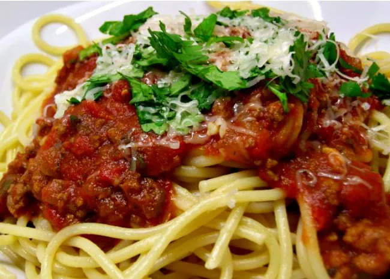

Spaghetti Sauce with Ground Beef

Description
Tired of overpriced and lackluster spaghetti when eating out? Look no further for you now have a solution to your problems.
This fine spaghetti recipe from Hank's mom will surely provide you and your family with a hearty and inexpensive meal.
Ingredients
- 1 pound ground beef
- 1 medium onion, chopped
- 4 gloves garlic, minced
- 1 small green bell pepper, diced
- 1 (28 ounce) can diced tomatoes
- 1 (16 ounce) can tomato sauce
- 1 (6 ounce) can tomato paste
- 2 teaspoons dried oregano
- 2 teaspoons dried basil
- 1 teaspoon salt
- ½ teaspoon ground black pepper
Steps
- Gather all ingredients
- Combine ground beef, onion, garlic, and green pepper in a large saucepan over medium-high heat.
Cook and stir until meat is browned and crumbly and vegetables are tender, 5 to 7 minutes. Drain grease.
- Stir diced tomatoes, tomato sauce, and tomato paste into the pan. Season with oregano,
basil, salt, and pepper. Simmer spaghetti sauce for 1 hour, stirring occasionally.
- Serve hot and enjoy!